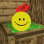

Connecting to the server
Failed to connect to the server
Page not found
This page does not exist, but these servers are online.
Play Multiplayer
AmaiCraft
An unofficial Minecraft toolbox
Recipes, commands, mob sounds, music discs, capes
www.amaicraft.fr

Void Archives
Something is Already Here...
Minecraft horror ARGs: Creator, Verity, The King in Yellow
arg.amaicraft.fr
Join Server
Refresh
Back to Title Screen